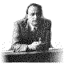

Intervista Impossibile
Perché Fermi?

Quale messaggio possono trasmettere alle nostre generazioni la sua vita,
i suoi scritti, le sue scoperte?
Perché uno scienziato?
Che cosa significa questa parola per gli adolescenti del 2001?
Erano alcuni degli interrogativi che hanno cominciato ad assillarci man mano
che ci inoltravamo nella consultazione del materiale: la biografia scientifica
dell'allievo Emilio Segrè, la biografia affettiva e personale della moglie
Laura, il sito della mostra su "Fermi e la Fisica Italiana" tenutasi a Roma
nel Febbraio del 2001, etc.
Il nostro lavoro poteva quindi partire solo se riuscivamo ad interiorizzare
alcune ipotesi di risposta a queste domande e chi meglio di Fermi stesso
avrebbe potuto aiutarci?
Da qui nasce l'idea di una intervista cronologicamente impossibile ma
fattibile con quell'Enrico Fermi che scaturisce dagli scritti di allievi e
parenti.
- "Professore, Lei è sempre stato riconosciuto come un ragazzo prodigio, con
potenzialità intellettive eccezionali ma come è riuscito a diventare un
genio - scienziato?"
- "Tante persone, avvenimenti, occasioni hanno concorso, ma penso che la
spinta vitale sia stato un aspetto del mio carattere: "la curiosità", porsi
sempre delle domande e cercare tenacemente le risposte anche se queste sono
oltre i confini del "conosciuto", oltre quindi alle colonne d'Ercole.
Forse è questa la caratteristica fondamentale che deve avere lo scienziato,
insieme alla capacità di confrontarsi dialetticamente con gli altri.
Purtroppo temo che questo modo di pensare e di essere sia lontano dallo stile
di vita dei giovani, che, per paura del rischio e della delusione o della
fatica, tendono ad essere a volte troppo rinunciatari."
- "A questo proposito, Professore, quale messaggio può trasmettere ai
giovani adolescenti?"
- "Per il mio carattere schivo, ho sempre evitato discorsi o proclami e mai
sono ricorso a prediche, ma ho preferito sempre suscitare entusiasmo con i
fatti e con l'esempio.
Quando ebbi la cattedra di fisica teorica a Roma nel 1926, mi resi conto
della necessità di introdurre forze nuove che potessero sviluppare le nuove
idee della fisica, cioè occorreva creare una "scuola" nel senso completo del
termine, e ciò avvenne quando, superate notevoli difficoltà, riuscii a
trasformare il vecchio Istituto di fisica di via Panisperna in una fucina di
esperimenti, di confronti di idee: un gruppo di amici più che allievi e
maestro, assorbiti dallo stesso sogno: la fisica."
- "Entusiasmo, anche questa è una parola che spesso è estranea al nostro
percorso scolastico, perché, Professore?"
- "Ho ancora vivo il senso di appagamento che provai a 14 anni, quando
in una bancarella di libri usati, a Campo dei Fiori a Roma, trovai due tomi
di un vecchio libro: "Elementorum Physicae Mathematicae volumen primum" di
padre Caraffa datato 1840... Mi si apriva un mondo di conoscenza, mi si
offriva uno strumento con cui avrei potuto trovare le risposte alle mie
continue domande.
Era da poco morto Giulio, mio fratello, amico e confidente e lo studio
rappresentò non solo una consolazione ma anche una grande fonte di "gioia".
Lo stesso senso di appagamento lo provai nell'estate del 1924, quando,
sdraiato sui prati delle Dolomiti elaboravo le mie idee scientifiche,
soprattutto la teoria dell'urto di atomi con particelle cariche.
Pur essendo riservato di carattere, avevo piacere di condividere questi
entusiasmi con chi era in grado di apprezzarli: da qui le lunghe conversazioni
con l'Ing. Amidei, grande amico di mio padre e mio 'istigatore' per
l'iscrizione alla Normale di Pisa, le chiacchierate con Kroning e Ugo Amaldi
durante le passeggiate in Val Gardena e i seminari improvvisati che tenevo
per i miei allievi nel mio studio in Via Panisperna.
Questi stati d'animo si provano quando c'è passione e forse ai ragazzi manca
questo: credere che valga comunque la pena di vivere la grande avventura
della conoscenza, che come tutte le avventure comporta rischi ma anche
vittorie."
Svanisce così e ora possiamo cominciare il nostro lavoro, forse con
maggiore... diciamo pure entusiasmo.